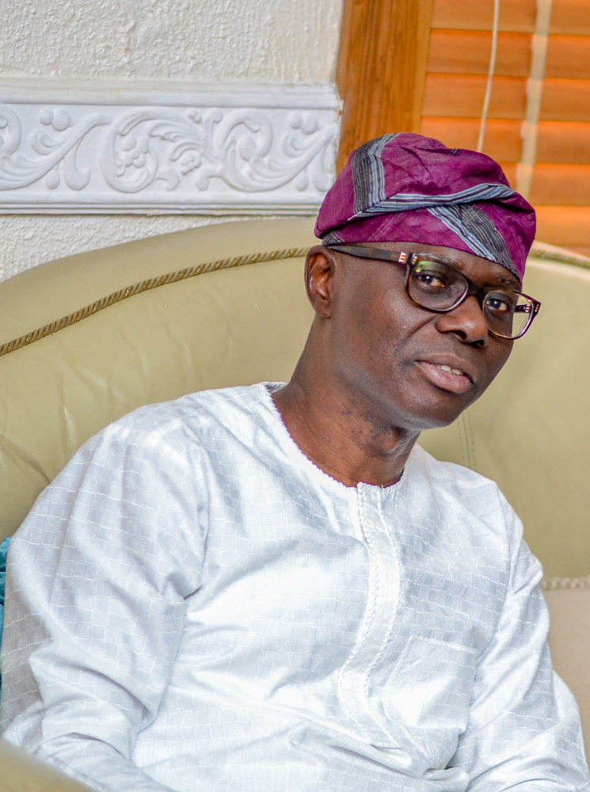
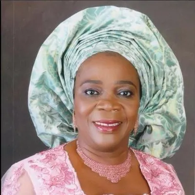
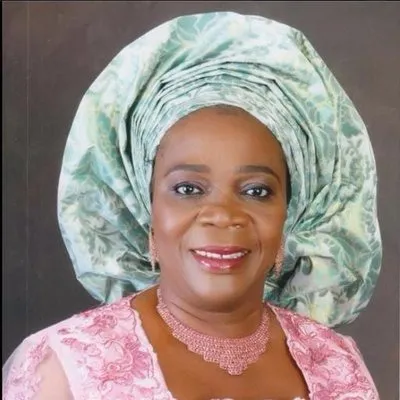
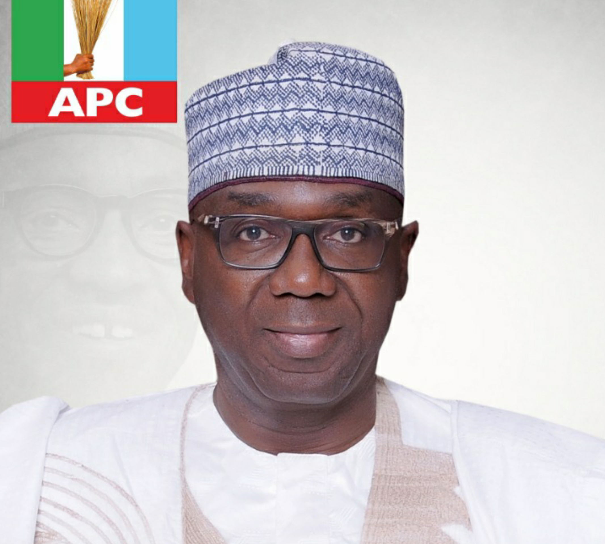
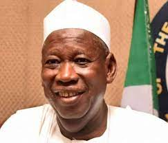
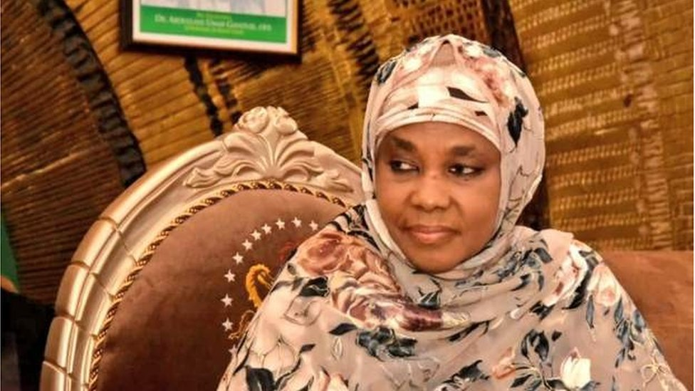
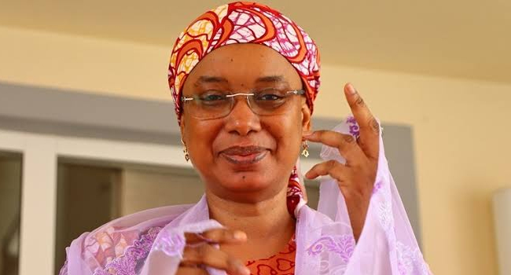
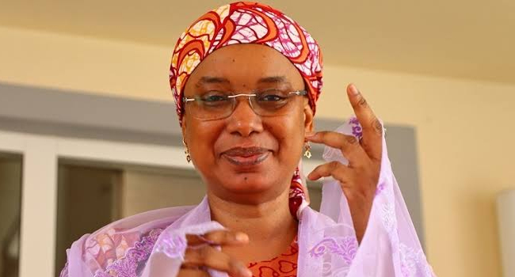
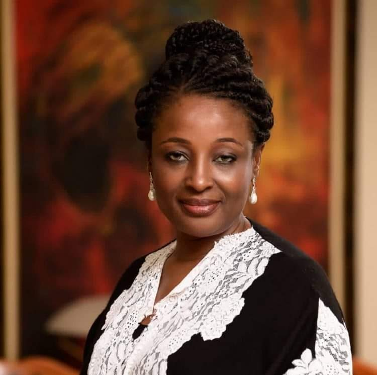

Geopolitical zones in Nigeria
South West
_Women Leader__Alhaja_Modinat_A_osede_Adedibu.webp "womenleaderofpdp")
- lagos
- ondo
- oyo
- ogun
south east
 

- anambra
- imo
- enugu
- abia
north central

- kwara
- kogi
- benue
- plateu
north west
 - sokoto
- kano
- katsina
- kebbi
north east
 

- adamawa
- Bornu
- yobe
- taraba
south south
- bayelsa
- edo
- akwaibom
- Delta